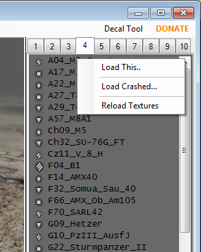
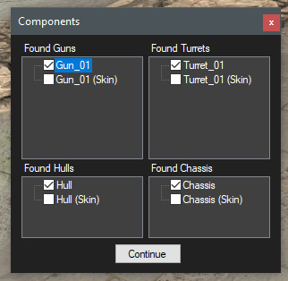

Loading a tank.
This is done by right clicking on a tank in the tier list to the right of the render window.
A small context window will open with 2 options.. Load This.. and Reload Textures.
NOTE: If Tank Exporter finds a tank in res_mods, it will load the tank from that location and NOT the PKG files.
This includes any textures, visual and primitive files. TE does this to preview any geometry or texture changes.
Never export FBX from a tank loaded from the res_mods unless you have NEVER changed the chassis!
Because of the way Tank Exporter modifies the Chassis.visual_processed file, it loses the changes to the Marker locations.
Re-exporting a previously modified chassis primitive will break the FBX.
|  |
You can also Reload Textures. |
|  |
Select the items you wish to load and Click Continue. The labeling of components does not mean they are the top level ones in a research tree. |